TAN GLOBUS AI · CreditLens AI · Day 3
The Good Bank Credit Workbench: walkthrough
A click-by-click walkthrough of the Credit Workbench, the web application around the Underwriter Agent from notebook 04b and the connections from notebook 05b. Every step has the screen and what to click, a screenshot from the trainer laptop, what to say if you are presenting it, and a green box naming the technique and why it is built that way, with the file and line.
About fifteen minutes. To start the workbench, see the README at the top of this repository. Screenshots were taken offline, without Docker, on 21 November 2026.
Before you start
- In a VS Code terminal in the repository folder:
- Open
http://localhost:8090. The top bar says Review assistant starting for about a minute while the server runs notebook 04b's code, then Review assistant online. - Sign in as Amaira Dey · Head of Credit (the user menu, top right). Close the browser's other tabs; you will switch users several times.
- Optional: start Docker first (see Docker) if you want the live systems in the demo.
data/cache/workbench_audit.jsonl and data/cache/jira_workbench.json before starting. The learned conditions (data/cache/underwriter_feedback.json) are rebuilt by the notebook code at every start, seeded with the compliance review Amaira added in notebook 04b.1. The work queue
- The work queue: every application, newest first. Point at the columns: amount in crore, age in days, the analyst, the status.
- Click a column header to sort; use the status and region filters.
- Bottom left, Connected systems: core banking says Replica, repayments says Estimated (no Docker).
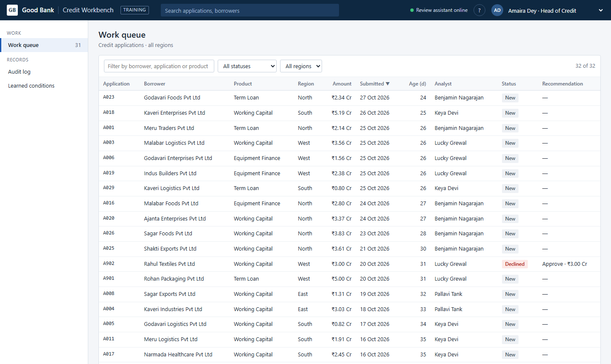
This is everything we built today, in the form a credit team would actually use it. Not a notebook: the bank's credit workbench. I am signed in as Amaira, the Head of Credit, so I see every application in every region. Every row is a real application from Good Bank's data, and Rohan's and Rahul's files are in here too. Nothing has been reviewed yet: every status says new.
- A table, not cards
- Credit teams work through queues. Sortable columns, age in days and a status column are what real loan systems show, and they make the agent part of an existing workflow instead of a separate toy.
- Region rule on the server
- The queue is filtered by the user's region in
queue(app/workbench/server.pyline 242) usingvisible(line 161). The page only shows what the server returns. - Connected systems
- The status box comes from
/api/systems(line 438): the Oracle adapter's backend and the running Docker containers.
2. Opening an application
- The record header: borrower, status, the key fields (requested ₹5.00 Cr, sixty months, manufacturing, West, analyst Lucky Grewal) and the approval authority: Head of Credit.
- The tabs are empty, and the credit decision panel says it is available once a review exists.
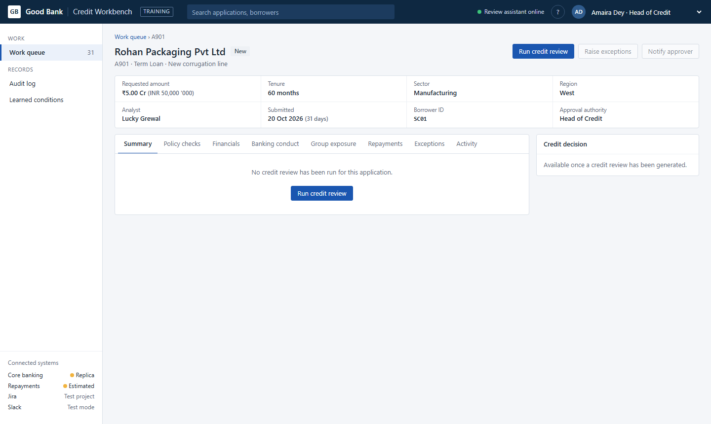
Rohan's application. Five crore for a new corrugation line, over sixty months. His analyst is Lucky Grewal in the West region. And notice the field at the end: approval authority, Head of Credit. That comes straight from the bank's policy, and it will matter in a few minutes. Nothing has been reviewed yet. Let us ask the review assistant to do the first four jobs.
3. Running the credit review
- A progress bar with seven steps fills in as the server runs them: Core systems, Application data, Data validation, Memo cross-check, Options assessment, Recommendation, Awaiting approval.
- Core systems takes about four seconds the first time (the repayment service is down and the client gives up), then the rest is quick.
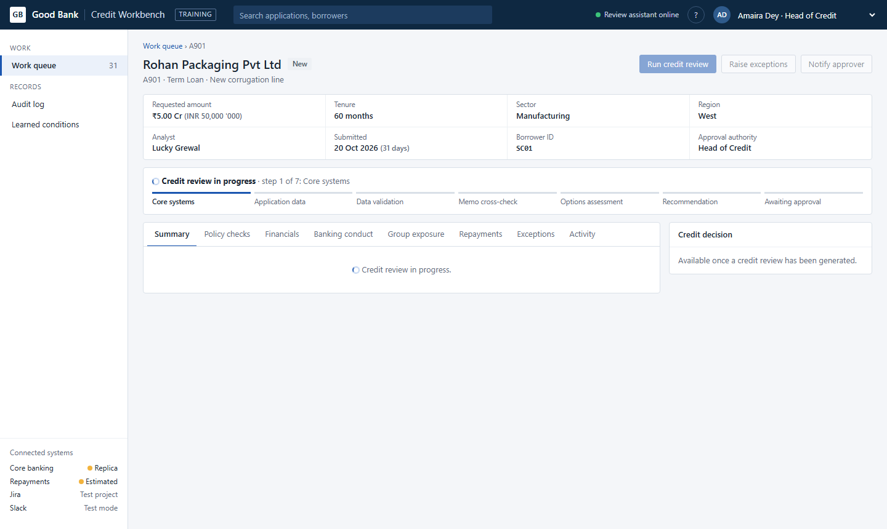
Watch the steps. These are the nodes of the graph we built in notebook four b, streamed from the server as they run. First it reads the bank's systems, core banking and the repayment service. Then it observes the file with its six sensors, checks its own figures, reads what the memo agent wrote, weighs the options the policy allows, writes the recommendation, and then it stops. The last step is awaiting approval, and it stays there. The review assistant never takes the fifth job.
- The notebook's own code
- At start-up the server runs notebook 04b's code cells once, in the background (
load_agent, line 56), and wires the notebook's seven node functions into one LangGraph (build_graph, line 77). The demo cannot drift from what participants built. - Streamed steps
prepare(line 267) runsgraph.stream(..., stream_mode="updates")and sends each node as a server-sent event; the page draws the progress bar from them.- It stops
- The
underwriter_signsnode callsinterrupt(). The graph is paused with a checkpoint; nothing is decided until a person resumes it.
4. The recommendation
- Recommendation: Counter-offer · ₹1.50 Cr, prepared by the Credit Review Assistant, with the prompt version.
- Rationale: rule 5.2 failed; risk band low. Proposed conditions: the compliance review of the round trips.
- For the approver's attention: not covered in the credit memo: money goes out and comes back within days.
- Key ratios: everything within policy except group exposure, in red: 1,55,000 against a limit of 1,20,000.
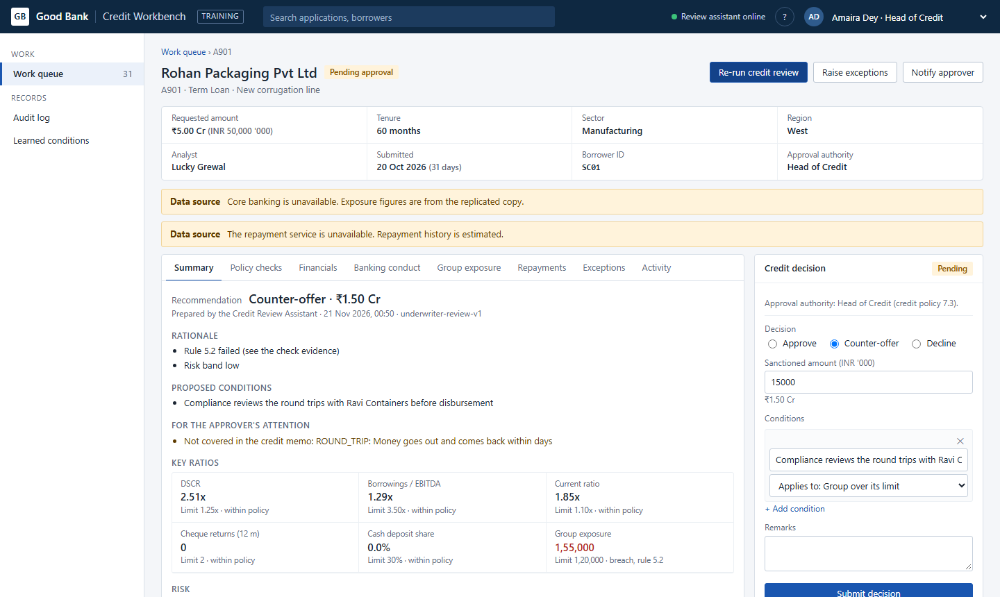
Here is the review. The recommendation is a counter offer of one and a half crore, not the five Rohan asked for. Why? The rationale says rule five point two failed, and the key ratios show it: everything is within policy except group exposure, in red. Rohan's group already owes the bank too much, so the most it can take on is the room left under the group limit. Then a condition it learned from Amaira, and a point for her attention that the credit memo missed: money that goes out and comes back within days. That is the second agent, checking the first one's work.
- Code decides, the model writes
- The proposal and the amount are computed by the utility stage in code before any model is called; the model only writes the note, and the lint rejects approval language. Same as notebook 04b, stages 4 and 5.
- Ratios from the checks
- The key ratio tiles are read from the policy checks themselves (measured value and limit), so the summary can never disagree with the evidence.
- Points for the approver
- The memo cross-check is notebook 04b's multi-agent stage:
missed_leadscompares the memo agent's draft with Session 2's case-file leads.
Ask the room: if you were Amaira, what would you want to see before you trust this number? (Answer: the next tab.)
5. The evidence: policy checks
- Every rule: the requirement, the actual value, the limit, pass or fail, and under each rule where the number came from.
- Rule 5.2 fails: the group's members and their exposure are listed in the evidence line.
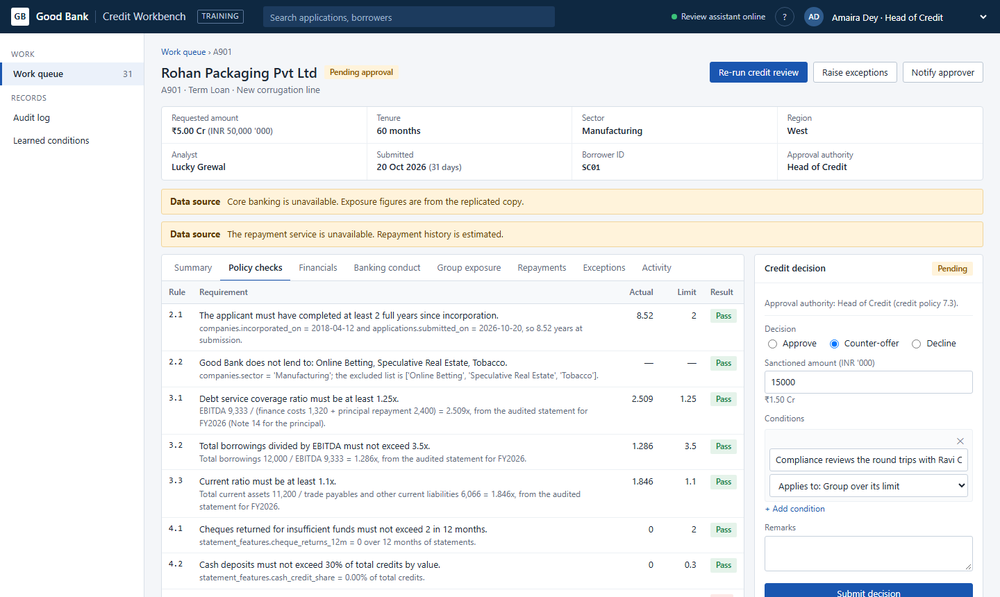
This is what makes the recommendation trustworthy. Every rule in the policy, the actual value, the limit, and underneath, where the number came from: which statement, which year, which table, which query. Nothing here came from the language model. The policy is plain code, and the model never computes a ratio. If a rule fails, Amaira can see exactly why, in one line.
- Policy as code
run_checksinsrc/creditlens/agents/policy_checks.py(line 220): each check returns the measured value, the threshold and an evidence string. Auditable by design.
6. Where the facts came from
- Above the tabs: Core banking is unavailable. Exposure figures are from the replicated copy. and The repayment service is unavailable. Repayment history is estimated.
- Repayments tab: the core banking exposure and the repayment schedule, each tagged Replica or Estimated.
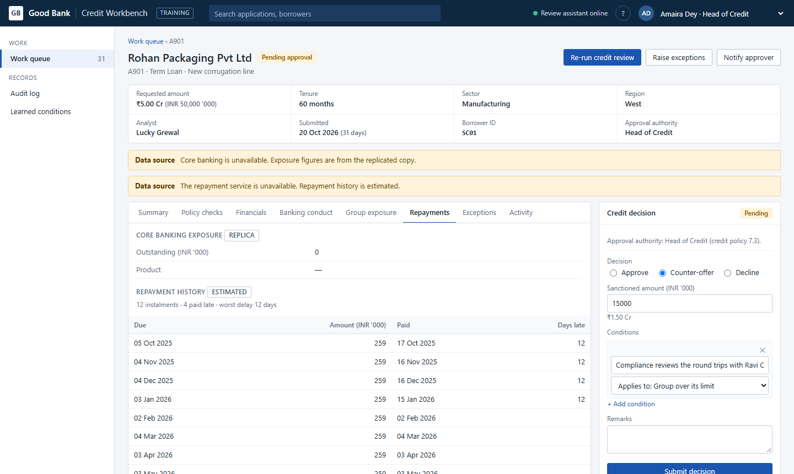
Two yellow notices. Right now the bank's core banking system and its repayment service are both unreachable. The review still went ahead, because Amaira needs it, but it does not pretend. Exposure came from a replicated copy, and the repayment history is an estimate, and the screen says so above everything else. A review that hides where its numbers came from cannot be trusted. We will switch the real systems on in a moment.
- Labelled fallbacks
connected_sensors(server line 198) calls the Oracle adapter and the SOAP client from notebook 05b. The adapter falls back to its stand-in within three seconds (src/creditlens/integrations/oracle.pyline 72); the SOAP client uses a timeout, a retry and a circuit breaker, then the labelled mock (soap.pyline 166).- One breaker for everyone
- The server keeps one repayment client (line 195), so after three failures its breaker opens and later reviews fall back instantly instead of each waiting four seconds.
7. The processing log and the audit trail
- Processing log: each step, what it found and how long it took. Core systems about four seconds; the memo cross-check about one second; the rest milliseconds.
- Audit trail: one line so far, the review generated by the Credit Review Assistant, requested by Amaira.
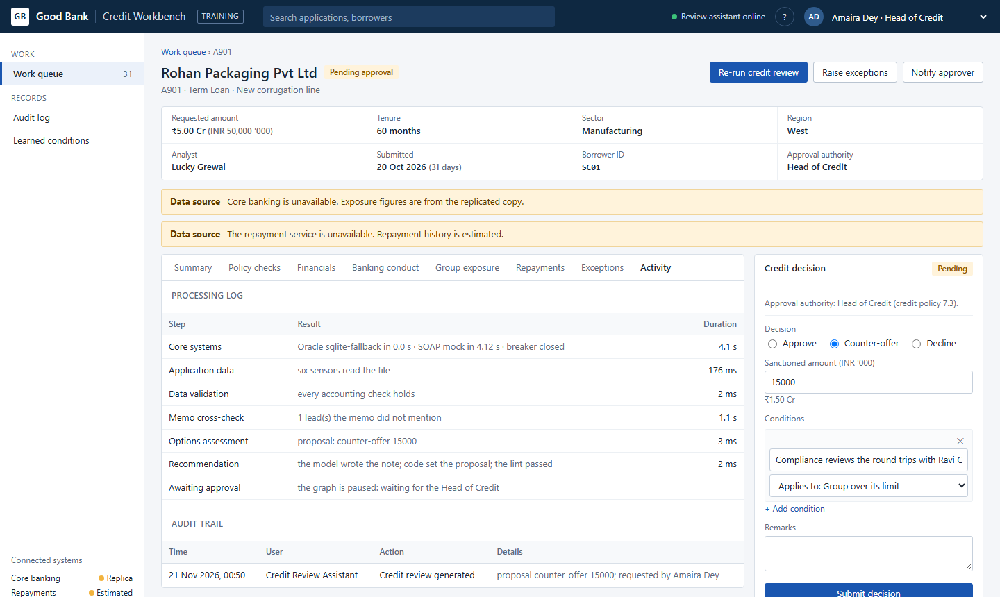
Two records. The processing log is for the engineer: every step, what it found, how long it took. Look where the time goes: almost all of it is waiting for systems that are down. And the audit trail is for the auditor: who did what, and when. Right now it has one line, the review the assistant prepared. Keep an eye on it.
8. A different user, a different region
- The queue shrinks to the West region only.
- Opening a North application directly by its address: Access denied. Lucky Grewal works in the West region; A001 is a North file.
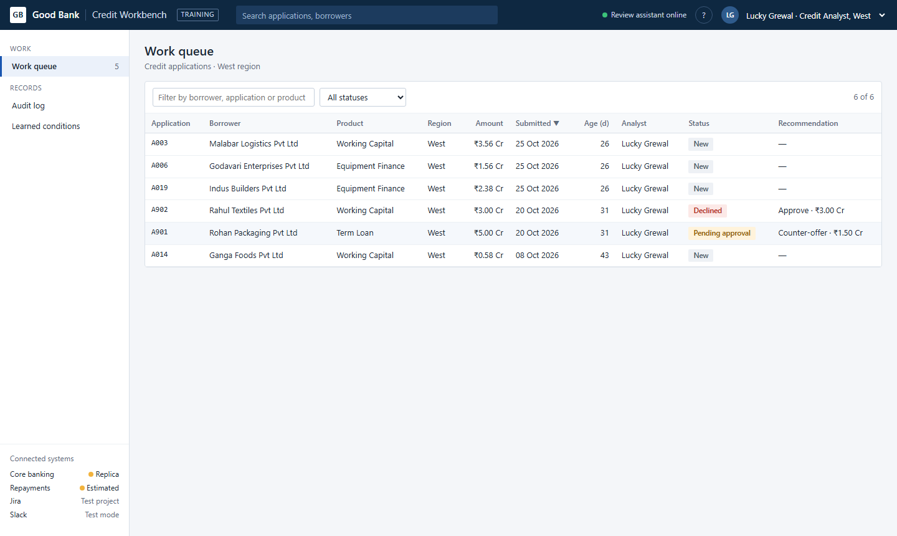
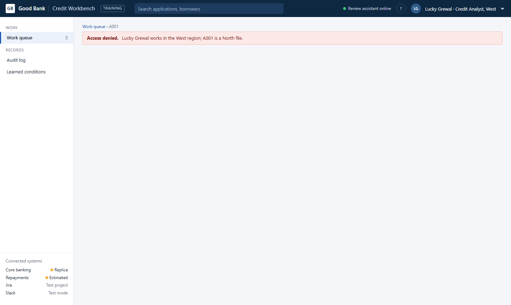
Now I am Lucky Grewal, an analyst in the West region. My queue only shows West. What if I am curious, and type a North application's address straight into the browser? Access denied. The rule does not live in the screen; it lives on the server, in every request. Hiding a button is not security. Refusing the request is.
- Checked on every request
get_app(server line 180) checks the region on every call that touches an application, and writesaccess_refusedto the audit log.
9. The analyst tries to decide
- The decision panel already says: Your role (Credit Analyst) does not carry approval authority. Submit anyway.
- Under the button and in a message: Lucky Grewal has the role analyst. Policy 7.3: only the Head of Credit decides.
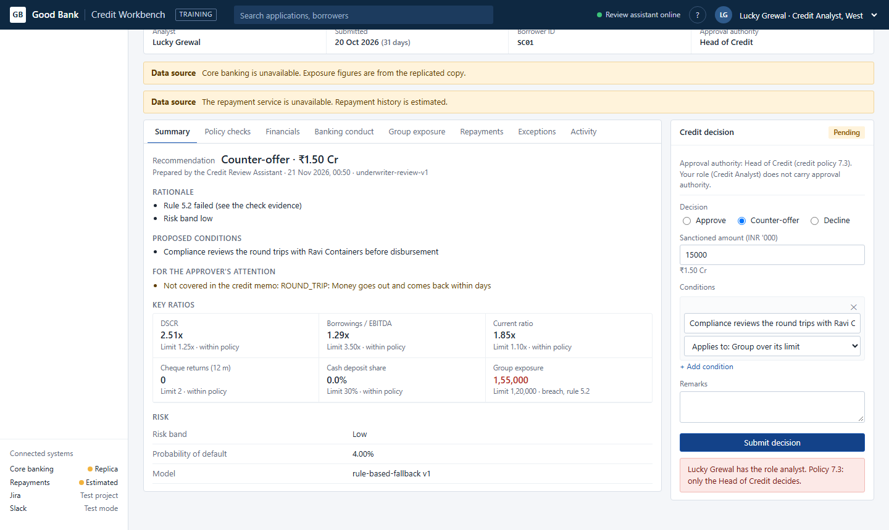
Lucky can read the whole review, but cannot decide it. The panel says so, and I submit anyway. Refused. And notice who Lucky is: Rohan's own analyst. The person who prepared a file never approves it. Banks call that the four eyes principle, and here it is enforced on the server, before the paused review is even touched.
- Check before resume
sign(server line 354) checks the role first and returns 403, writingsignature_refusedto the audit log. Only then does it callCommand(resume=...). Inside the graph, the gate node checks the role again: two layers, as in notebook 04b'ssign().- The same rule everywhere
- The command line (
src/creditlens/agents/approve.pyline 36) and the Slack button (src/creditlens/integrations/slack.pyline 126) enforce the same rule. One gate, many channels.
10. Amaira decides
- Decision: Counter-offer; sanctioned amount 15000 (₹1.50 Cr).
- Conditions: the proposed compliance review (applies to: group over its limit), plus a new one: Personal guarantee from the managing director (rule 6.2), applies to: all applications.
- After submitting: the status changes to Counter-offer; the decision panel says Recorded, with who and when; and Added to learned conditions.
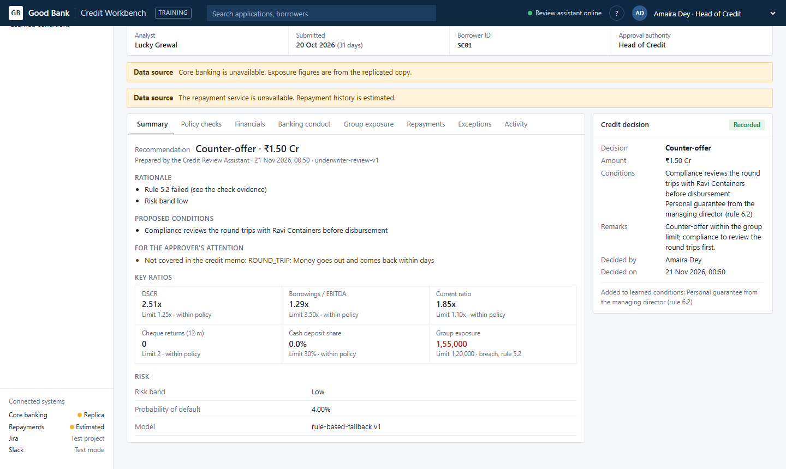
Now I am Amaira. I agree with the counter offer. I keep the compliance review it proposed, and I add a condition of my own: a personal guarantee from the managing director. A remark for the file, and submit. The paused graph resumes from its checkpoint, records my decision, and learns. The new condition is added to what the assistant has learned, so next time it will propose it. It learns conditions I can review. It never learns to approve.
- Resume from the checkpoint
- The decision is passed into the paused graph with
Command(resume=decision); thelearnnode runs the critic and updates the feedback file. - Each condition keeps its scope
- The "Applies to" setting is the trigger the condition is learned for. An earlier version saved every proposed condition as "all applications", which would have quietly widened a condition Amaira only wanted for over-limit groups. What an agent may learn, and for which files, is a design decision.
11. Raising the exception, twice
- First click: CREDIT-1 raised. Second click: CREDIT-1 already exists.
- The Exceptions tab: rule 5.2, its text, and ticket CREDIT-1.
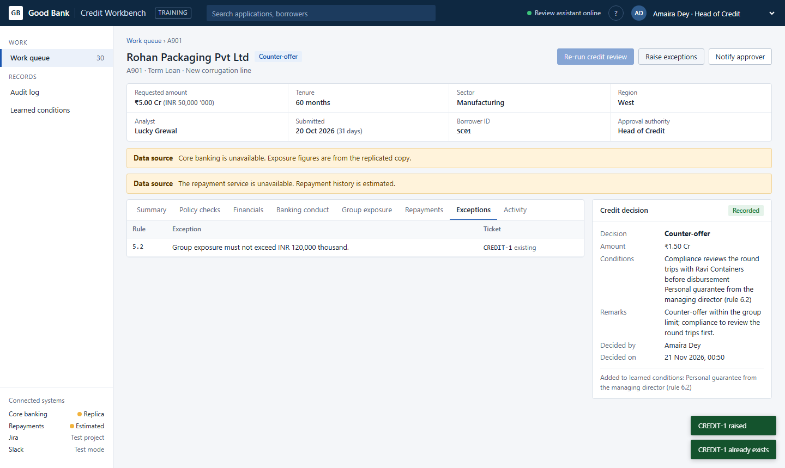
Rule five point two failed, so compliance needs an exception ticket in Jira. I raise it. Then, the way a nervous user or a retry would, I raise it again. Already exists. One ticket, not two. Every write the assistant makes carries a key, the application plus the rule, so doing it twice changes nothing.
- Idempotency key
file_ticket(src/creditlens/mcp_jira/client.pyline 92) sendsA901:5.2as the key; the MCP server returns the existing ticket instead of creating a new one. Called from the server'sticketsendpoint (line 384).- Least privilege
- The MCP server offers three tools only: create, get and search issues. The assistant cannot close, assign or delete anything.
12. Notifying the approver
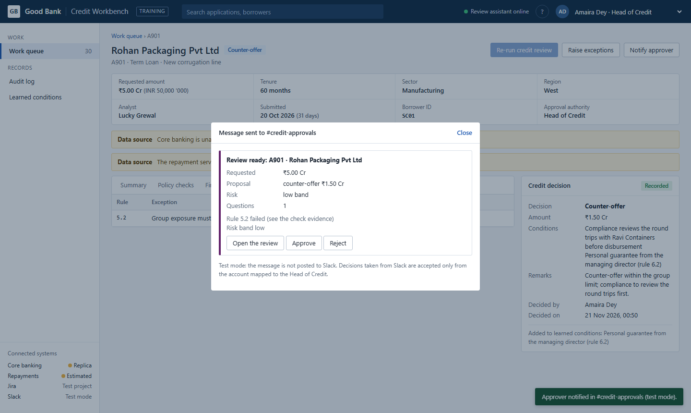
In a bank, the Head of Credit is rarely sitting at this screen. So the workbench can notify her in the approvals channel: the application, the recommendation, the risk, and buttons. And if she clicks approve on her phone, the very same rule applies: only the account mapped to the Head of Credit can decide.
- One gate, many channels
- Slack decisions go through
handle_decision(slack.pyline 126), which maps Slack users to bank users (SLACK_USER_MAP) and refuses anyone who is not the Head of Credit, before resuming anything.
13. Learned conditions
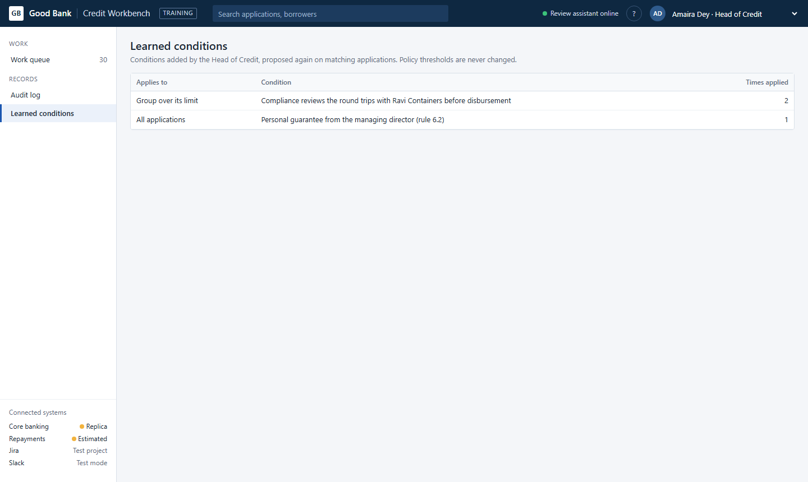
This is the assistant's memory, in plain view. Each condition the Head of Credit added, what kind of application it applies to, and how often. The compliance review applies only to groups over their limit; the guarantee to every application. Nothing here changes a policy threshold, and nothing here can approve a loan. If this list ever looked wrong, a person could see it and fix it.
- Visible memory
/api/memory(server line 431) reads the feedback file that notebook 04b'slearnwrites. Long-term memory should be something a person can inspect, not something hidden inside a model.
14. The audit log
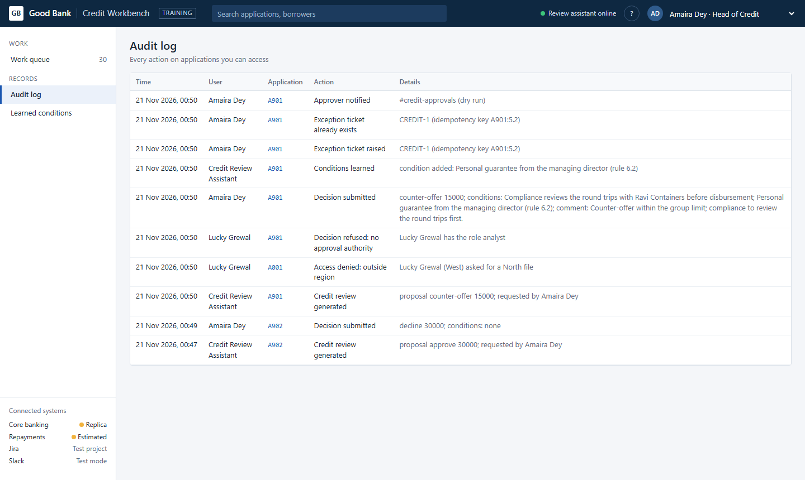
And here is the whole demo, as an auditor would see it. The review the assistant generated. Lucky's attempt to open a North file, refused. Lucky's attempt to decide, refused. Amaira's decision, with its conditions. What the assistant learned. The ticket raised, and the second attempt that changed nothing. The notification. Who, what and when, for every step. The agent prepared, Amaira decided, and every step has a name against it.
- Append-only record
- Every action calls
audit(server line 165), which appends one line todata/cache/workbench_audit.jsonl. The page reads it through/api/audit(line 425), filtered by the user's region.
With Docker: the real systems
- Add to
.env:ORACLE_DSN=localhost:1521/FREEPDB1,ORACLE_USER=creditlens,ORACLE_PASSWORD=creditlens. - Stop the workbench (Ctrl+C) and start it again, so it reads
.env. - Run the credit review on Rohan's application again.
What changes: under Connected systems, core banking and repayments say Live; the two yellow notices disappear; the Repayments tab tags say Live; the processing log says Oracle oracle and SOAP soap, much faster than the four seconds the fallback took. The live Oracle table also disagrees with the replicated copy on some companies (for example C003), which is a lesson in itself: the system of record wins.
Now the bank's systems are running, as real services on this laptop. Same application, same code, run the review again. The notices are gone, the sources say live, and the core systems step is much faster. Nothing in the agent changed. That is the point of labelling every fact: it moves from a laptop to production without changing its code.
Memory: on an 8 GB laptop, run only the legacy profile for this demo. Stop it afterwards: docker compose -f infra/docker-compose.yml --profile legacy stop.
Behind the screen: where each piece lives
| On screen | Server (app/workbench/server.py) | From the notebooks and the library |
|---|---|---|
| Review assistant starting / online | load_agent line 56, build_graph line 77 | notebook 04b's code cells, run once; its seven nodes and ReviewState |
| Work queue, access denied | queue line 242, visible line 161, get_app line 180 | data/raw/registry/users.csv: roles and regions |
| Run credit review, progress, processing log | prepare line 267, describe line 323 | 04b stages 2 to 8; the graph streamed node by node |
| Data-source notices, Repayments tab | connected_sensors line 198, the shared client line 195 | 05b: integrations/oracle.py (adapter, fallback), integrations/soap.py (timeout, retry, breaker, mock) |
| Submit decision, refused | sign line 354 | 04b: interrupt(), Command(resume=...), learn |
| Raise exceptions | tickets line 384 | 05b: mcp_jira/client.py line 92, the idempotency key |
| Notify approver | notify line 408 | 05b: integrations/slack.py, handle_decision line 126 |
| Learned conditions | memory line 431 | 04b: learn, data/cache/underwriter_feedback.json |
| Audit log | audit line 165, all_audit line 425 | data/cache/workbench_audit.jsonl |
| The page itself | app/workbench/index.html: one HTML file, no build step: renderQueue line 224, tabHtml line 305, decisionHtml line 351, runReview line 396 | |
Questions the room will ask
- Is the recommendation written by a language model?
- The wording of the note is, through the gateway (offline today, a stand-in that writes from the facts). The recommendation and the amount are not: they are computed in code before the model is called, and code overwrites whatever proposal the model writes.
- Could an analyst bypass the screen and call the API directly?
- No. The region and authority checks are on the server, in every request. The screen only reflects them. Try it with the address bar, as in step 8.
- Why does the first review take about five seconds?
- Almost all of it is the repayment service timing out (it is down without Docker). After three failures the circuit breaker opens and the fallback is instant. With Docker running, the systems answer instead of timing out, so the review is much faster.
- What if the server restarts in the middle of a review?
- This training server keeps checkpoints in memory, so a restart starts clean. In production the checkpointer would be a database, and a paused review would survive a restart, as the command line already does with its SQLite checkpointer.
- Is this real data?
- No. Good Bank, its borrowers and their files are synthetic. No real person's data is used.
- How would this go to production?
- That is Session 4: a real risk model, masking of personal data, guardrails, an evaluation gate in CI, a container, then monitoring and incidents.
Reset and troubleshooting
| Problem | What to do |
|---|---|
| "Review assistant starting" for more than two minutes | Check the terminal for an error. The assistant needs data/story/ and data/scenarios/: run python -m creditlens.scenarios.story build and python -m creditlens.scenarios, then restart. |
| Port 8090 is already in use | PowerShell: $env:WORKBENCH_PORT=8091, then start again and open localhost:8091. |
| "Re-run credit review" is greyed out | The application is already decided. Restart the server for a clean queue. |
| Start the demo again from zero | Ctrl+C, delete data/cache/workbench_audit.jsonl and data/cache/jira_workbench.json, start again. |
| The page looks stale after changing users | Click Work queue in the left menu; the user's queue reloads. |